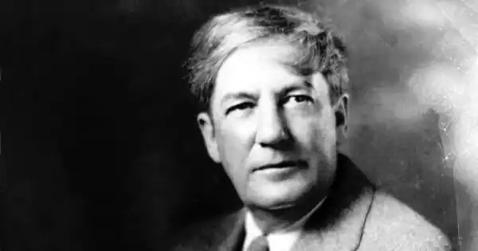

АНДЕРСОН, Шервуд (Anderson, Sherwood — 13.09.1876, Камден, штат Огайо — 8.03. 1941, Колон, Панама) — американський письменник.
Вихідець з багатодітної збіднілої сім'ї, навчався епізодично, не зміг закінчити коледжу. З дитинства поневірявся країною, змушений був працювати газетярем, пастухом, посильним, вантажником на чиказьких бойнях, малярем, агентом рекламного бюро. Служив солдатом під час іспано-аме-риканської війни 1898 р. Зайнявшись бізнесом, виріс до власника посилкової фірми в Огайо. На початку 1910-х pp., незадовго до 40-ліття, пережив гостру душевну кризу, розчарувався у бізнесі, покинув сім'ю і переїхав у Чикаго, де став письменником. Там реалізувався його давній інтерес до людей, їхніх доль і переживань, їхніх історій, котрі він завжди жадібно слухав. Ця початкова пора А., його дитинство і юність, формування його як письменника, характеристика оточення, щирі свідоцтва внутрішніх сумнівів, надій, поривань — все це разом узяте складає зміст його цікавої мемуарної книги, написаної, коли до А. вже прийшла слава, і дуже точно названої "Розповіддю оповідача "("A Story — Teller's Story", 1924).
У 1914 p. А. дебютував як новеліст, а через два роки видав перший роман "Син Вінді Макферсона"("Windy McPherson's son", 1916). У центрі його — історія героя, з певними автобіографічними рисами, його вивищення, збагачення, а згодом розчарування у діловій діяльності, що призвело до сильного внутрішнього потрясіння. У наступному романі А. "Крокуючі люди "("Marching Men", 1917) героєм став Мак Грегор, син шахтаря, юність якого проминула у гірняцькому селищі, людина фізично сильна і вольова, яка проймається неприязню до хаотичного і нікчемного навколишнього життя. Звернення А. до нової для нього робітничої теми і певний утопізм сюжету визначили незвичний для письменника вибір художніх засобів у цьому романі, де риторика і публіцистика домінують над живою зображальністю. Проте не романна, а "мала" новелістична форма якнайорганічніше відповідала художній манері А. Справжній успіх прийшов до нього з виходом його знаменитої збірки "Вайнсбург. Огайо " ("Wineshurg, Ohio", 1919), яка викликала всеамериканський резонанс. Книга стала віхою в історії національної літератури, своєрідною точкою відліку, свідченням подальшого збагачення реалістичного мистецтва. 23 новели, що увійшли до збірки, утворюють своєрідний цикл і навіть, як вважають деякі критики, "роман в новелах". Ця внутрішня єдність досягається завдяки спільному місцю дії — маленькому провінційному містечку Вайнсбур-ґу, зі своєю топографією і географією, а також завдяки наявності "наскрізних" персонажів, з-поміж яких центральним є молодий журналіст Джордж Віллард — співробітник газети "Вайнсбурзький орел", який мріяв стати письменником. Деякі з героїв новел сповідаються йому, діляться з ним своїми історіями. Але найголовніше те, що в новелах розлита особлива атмосфера, особливий настрій. Своєрідність збірці надають і її герої. Перед читачами збірки проходить процесія дивних і химерних людей, самотніх, неприкаяних, які даремно намагаються налагодити контакти один з одним, виговоритися, які мучаться непевними еротичними бажаннями. Помітну роль відіграла в А. художньо трансформована теорія 3. Фрейда. Незвичними були не лише герої, а й самі новели, які нагадували психологічні ескізи, замальовки. До А. у США панівне становище посідала гостросюжетна новела із захоплюючими колізіями, часто "щасливою кінцівкою". її зразки ми знаходимо в Е. По, О. Генрі. В А., навпаки, відсутній чіткий сюжет, а його герої з'являються "нізвідки" і відходять у "нікуди". Своєю збіркою А. заперечив міф про миле і пристойне провінційне життя; його герої страждають ие від матеріальної скрути, а від душевної невлаштованості, внутрішнього дискомфорту, а найголовніше, безмежної самотності. Так, Вінгл Бідлбом, учитель, який мав звичку доторкатися своїми нервовими руками до будь-якої живої істоти, стає жертвою злих обивателів і його виганяють з міста ("Руки "). Еліс Хайдмен, самотня жінка, яка даремно чекає свого першого і єдиного коханого, не може впоратися з непевними пристрастями, зважується на екстравагантний вчинок — вибігає вночі голою иа вулицю ("Пригода"). Дивакуватий молодий чоловік Сет Річмонд не здатний зізнатися у своїх почуттях дочці місцевого банкіра ("Мислитель "). Превелебний Кертіс Хартман болісно бореться зі своїми пристрастями ("Божа сила "). Герої А. живуть у світі незбутих надій і поривань, вони глибоко розчаровані у житті. Елізабет Віллард завжди поривалась до чогось незвичайного, незвіданого, чого не могли зрозуміти навколишні, але так і не вирвалася зі затхлого світу Вайн-сбурга ("Матір "). Схожий на дитину голубоокий художник Еиох Ролінсон сам себе замурував у своїй кімнаті і тому ие може спілкуватися з навколишніми, у тому числі і з власною сім'єю ("Самотність "). Лікар Персіваль, любитель поміркувати, син божевільного батька, брат якого алкоголік, сам ліг на рейки, — відчуває страх перед життям і навіть підсвідому ненависть до людей ("Філософ "). Ті ж персонажі з "химерами" діють і в другій знаменитій збірці "Тріумф яйця "("The Triumph of the Egg", 1921). A. — новеліст збагатив оповідь, привнісши в неї нові стильові прийоми, тонкі психологічні нюанси та підтекст. Вій став своєрідним художнім орієнтиром для цілого покоління письменників, першого повоєнного покоління, "людей двадцятих років", як їх іноді називали; поміж них були Е. Хемінгвей і В. Фолкнер, котрі вбачали у ньому свого вчителя, а також Ф.С. Фіццжеральд. Сам А. вважав, що він йде шляхом реалізму, прокладеному у літературі Т. Драйзером. Значно менше поталанило А. з його романами 20-х років, такими, як "Бідний білий" ("Poor White", 1920), "Багато шлюбів"'("Many Marriages", 1921) і "Темний сміх "("Dark Laughter", 1925). Зображення надуманих психологічних колізій своїх героїв в останньому романі А. стало об'єктом пародіювання у повісті Е. Хемінґ-вея "Весняні води" (1926). Після певного спаду в другій половині 20-х років А. на початку "червоних тридцятих" неначе здобув друге дихання. Різко зросла його суспільна активність. Разом з Т. Драйзером, Дос Пассосом він брав участь у створенні колективної книги "Говорять гірники Харлану"(1932), що стала результатом поїздки до страйкуючих гірників штату Кеитуккі. Підсумком цієї поїздки був і роман А. "По той бік бажання "("Beyond Desire", 1932). Документальну основу роману складає страйк текстильників у Гастонїї в 1929 році, який закінчився невдачею; при цьому охоронці вбили декількох робітників, а ряд страйкарів було ув'язнено. Роман, як і деякі інші твори А. великої форми, був фрагментарним за своєю структурою і складався ніби з чотирьох великих новел. Вони були пов'язані образом центрального героя Реда Олівера, котрий приїхав працювати на текстильну фабрику в південне містечко Ленґдон. Це — самотня, охоплена сум'яттям людина, яку мучать нереалізовані пристрасті. Певна поривчастість, імпресіоиістичність манери А. по-своєму гармоніює з образом внутрішньо роздвоєного героя. У романі виділяється друга частина — "Фабричні дівчата", в якій точно і конкретно відтворений побут робітниць-текстильниць, окреслені їхні психологічно складні образи. Одна з них — Моллі Сібрайт стане активною учасницею страйку. Як завжди, помітне місце посідає у романі любовна тема. У центрі третьої частини "Етель" — ЕтельЛонг, 29-річна уродженка Півдня, вродлива, самолюбна жінка, у якій вдавана холодність бореться з природною пристрасністю. Після зближення з Редом Олївером вона йде від нього до процвітаючого адвоката Тома Ріддлу — людини цинічної і досвідченої. У фіналі роману Ред Олівер гине у зіткненні з національними гвардійцями, яких очолював такий же, як і він, виходець з інтелігентського середовища Нед Сейер. Це — людина, якій навіяли страх перед "червоною небезпекою". Роман, що спричинився до полеміки у критиці, був не зовсім вдалою спробою письменника художньо освоїти нову для нього тему, відгукнутися на радикальні настрої тих років. У 1935 р. вийшла книга публіцистики А. "Здивована Америка "("Puzzled America"). Вона складається з нарисів, репортажів, етюдів, написаних під час поїздок письменника по країні, зокрема південними штатами, де вій спостерігав процес індустріалізації, народження нових фабрик, заводів, крах старих форм життя. Починаючи із середини 30-х pp. А, як і деякі його колеги, відійшов від лівого руху. Суттєву роль відіграли тут звістки про "великий терор", розв'язаний сталіиістами в СРСР. А. — один із класиків американської прози XX ст. Своїми кращими творами, перш за все новелістичними, вій допомагав розвитку і збагаченню психологічної лінії в реалістичній літературі.